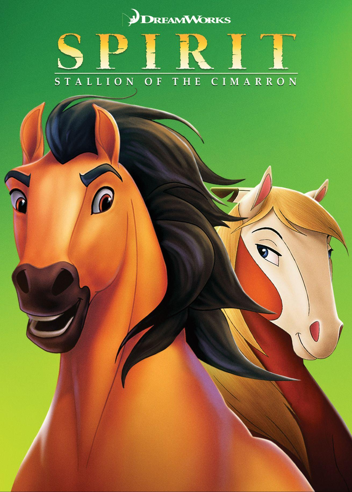
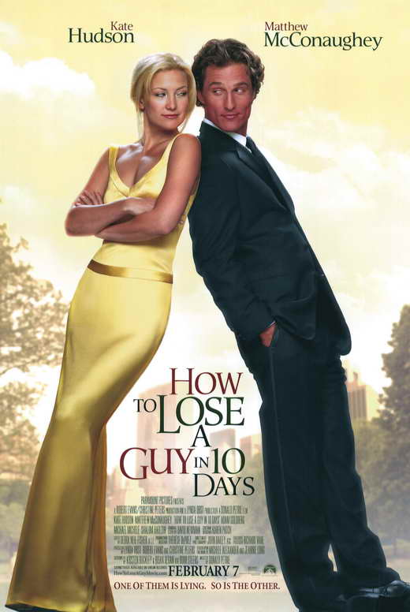

The movie reminds me of myself being so influenced by everyone around you that you start to forget who you are in your own life. The Life List makes me feel like I'm not alone in feeling lost, and motivates me to do the things that make me happy.
A coming of age story about a young woman who discovers her life's purpose through a list of experiences she is meant to have made by her mother who had passed on.
Eat Pray Love is another comfort movie I watch when I need a sense of grounding, when the world feels loud, I know that I can watch it to make me do the things that seem uncomfortable but are actually to challenge my limiting beliefs.
Eat Pray Love follows Liz Gilbert, who, after a divorce, leaves behind her comfortable life to travel through Italy, India, and Bali in search of pleasure, spirituality, and balance. Based on Elizabeth Gilbert’s memoir, it combines lush visuals, a star turn by Julia Roberts, and themes of self-discovery.

Spirit is a movie that I watched not only as a child but even as an adult and it still holds a special place in my heart. It reminds me of the importance of freedom and the power of the human spirit to overcome adversity. It was from that movie that sprouted my love for horses, but it also cultivated courage and resillence within myself
Spirit: Stallion of Cimmaron is an animated film that tells the story of a wild mustang named Spirit who is captured by humans and taken to a fort. The movie follows Spirit's journey as he tries to escape and return to his homeland, while also forming a bond with a young Lakota brave named Little Creek.

This movie is the most fun and wholesome rom-com I have ever watched, it's got the predicable end that doesnt feel cheesy, some mid romance conflict and some cute moments that make love worth fighting for.
How to Lose a Guy in 10 Days follows magazine writer Andie and ad exec Ben, each with a secret agenda: she aims to drive a man away for an article, he bets he can make any woman fall for him—both in just ten days. Their dueling schemes spark escalating antics and unexpected chemistry.